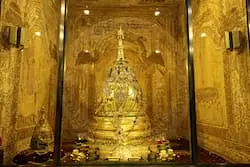
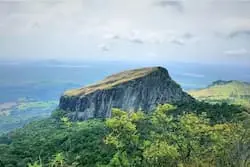
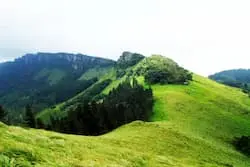

Magnificent Kandy
Kandy is the second largest city in the center of Srilanka & was the last capital of the country prior to it becoming a British colony. Being a religious & a sacred city Kandy is being nominated as one of the world heritage sites in the world by UNESCO. The city of Kandy showcases the proud culture & heritage of Sri Lanka.
Places Of Sacred Value
The Temple Of Sacred Tooth Relic
Sri Dalada Maligawa is a Buddhist temple which houses tooth relic of Lord Buddha. During ancient times the person who holds the tooth possession of the Tooth Relic gains the opportunity for the governance of Sri Lanka. The temple stays next to the Royal palace & has been built to a unique architectural design. The sacred Relic rests in a golden casket & the shrine in which it rests is called the room of perfume. The Room of perfume is decorated with gold & ivory carvings.
Lankathilaka Maha Viharaya
.webp)
A Buddhist temple built on a rock & traded the building with most magnificent architectural design built in Gampola era. Paintings that decorate the celling & the walls of the building & the sculptures shows outstanding architectural features.
Gadaladeniya Viharaya
.webp)
An ancient rock temple which is believed to be one of the largest rock temples built in the country. The design of the temple contains singhala, hindu as well as chinese architectural patterns.
Embakke Devalaya
.webp)
A place of worship dedicated to god of katharagama, a god who belived to be lived in Sri Lanka. This ancient building is famous for its magnificent wood carvings & the significant architectural features in the roof of the building.
Natural Sites
Rangalla Natural Pool
.webp)
Rangalla Pool originates from knuckles mountain range & follows calmly though boulders creating magnificent scenery. Water in the pool is crystal clear & even the pebbles at the bottom of the pool is visible.
Peradeniya Botanical Garden
.webp )
A world famous garden for the collection of Orchids found in this Boranical Garden . It has plants of more than 4000 species in 147 acres.
Yahangala
Located in knuckles reserve & a place full of natural beauty. It is called Yahangala as the rock is positioned like a bed.. The 360 degree scenery at the top of the mountain is unforgettable & thrilling.
Hanthana Mountain Rage
An environmental protection site containing seven mountain peaks. It is a favorite site among mountain hikers.
Cultural Events
Kandiyan Pagent
.webp)
It’s also called The Festival of the Tooth & takes place annually to pay homage to the sacred Tooth Relic of Lord Buddha. It’s an exceptional event to witness. This event processions traditional dancing parades, fire performances, Elephant pageants dressed in unique kandiyan garments & mark a unique symbol of the Perl of Indian Ocean. This event is unlike anything you watched before.